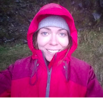

About Me
I like wearing red. And smiling. My hobbies include riding my motorcycle (not pictured) and exploring North Carolina as a recent transplant from Los Angeles.
Professionally, I have worked in visual effects for feature films. Such projects include the Oscar winning effects on The Curious Case of Benjamin Button to 50 Shades of Grey (you'll have to ask me what was computer generated...). Most recently, that love of art and technology has led me to web development where I aim to make the web both beautiful and functional.
Connect with Me